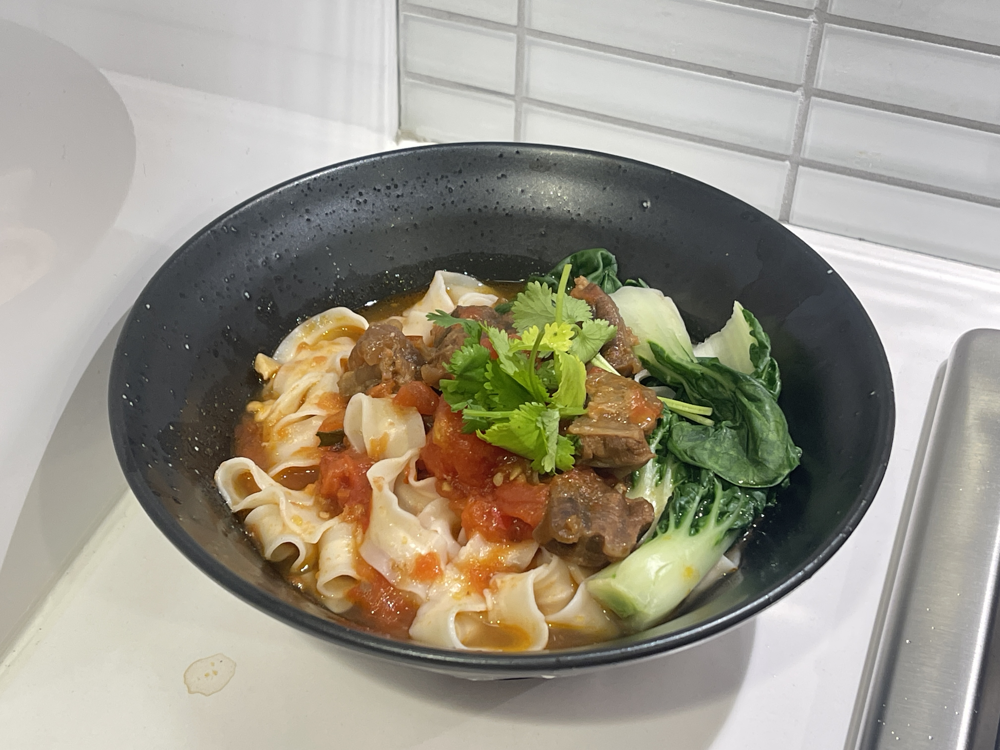

INGREDIENTS
Beef Tendon, Tomato, Garlic, Sliced Ginger, Scallion, Dried chili peppers, Star anise, Allspice, Cinnamon,
Rock candy, Spicy Bean Sauce, Wine, Soy Sauce, Dark Soy Sauce, Salt, Noodles, Cilantro, Vegetable--
Taiwanese Tomato Beef Noodles
Pressure cooker version
台式番茄牛肉面
THIS DISH ISRECOMMENDED BY TERESA SUN
Tomato beef noodle flavored instant noodles are Teresa's favorite, and one day when I was videoing with
her she was eating them again, so I had a sudden whim, let me help you to restore the real tomato beef
noodle. So I asked my aunt in Taiwan about the way to make beef noodles. After trying it out, I realized
that it was actually quite easy and I ended up giving the recipe to teresa as well,
hoping that she can make it herself in London.